|
|
| crustaceans text index | photo index |
| Phylum Arthropoda > Subphylum Crustacea > Class Malacostraca > Order Decapoda > Brachyurans > Superfamily Ocypodoidea > Genus Uca |
| Orange
fiddler crab Gelasimus vocans Family Ocypodidae updated Dec 2019 Where seen? This tiny crab with a 'pimply' oversized pincer is commonly seen on our natural undisturbed shores, usually on softer, muddier areas more exposed to wave action than other fiddler crabs. This includes the bottom of swimming lagoons, shores near large boulders. It was previously known as Uca vocans. Features: Body width 2-3cm. Body squarish. The male fiddler crab's enlarged pincer almost twice as long as the body width. The enlarged pincer's outer palm is pimply with a large triangular depression. The movable upper finger meets (does not extend past) the immobile lower finger. The tips of the fingers are flattened and sword- or sabre-like. There is a wide gape between the upper and lower finger. The enlarged pincer's inner palm has a horizontal ridge of bumps. The immobile lower finger is orange or yellow. Body colours and patterns vary: some greenish, others greyish. Eyes greyish with dark tops, on long stalks greyish, walking legs short greyish to brown or orange. Their burrows can be half a metre deep! Sometimes mistaken for the Porcelain fiddler crab (Uca annulipes). More on how to tell apart the fiddler crabs commonly seen on our shores. |
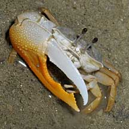 Pincer outside, pimply with triangular depression, fingers flattened, sword-like. Pulau Hantu, May 09 |
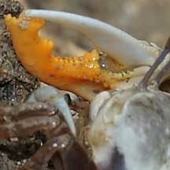 Horizongal ridge of bumps on the inside of the pincer. Pulau Ubin, May 08 |
|
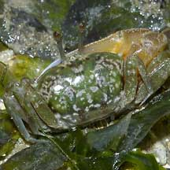 From the back. Chek Jawa, Oct 04 |
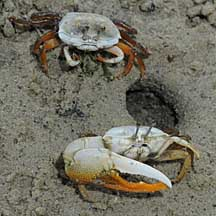 Female (top) and male (bottom). Pasir Ris, Jun 09 |
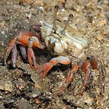 Females have two small pincers Pulau Ubin, May 08 |
|
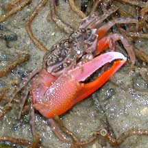 Pincer colours may vary. Chek Jawa, Feb 02 |
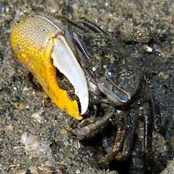 Pulau Ubin, Feb 05 |
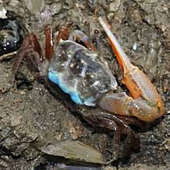 Different coloured backs. Pulau Ubin, May 08 |
|
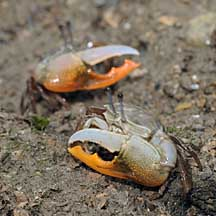 Males may be 'right' or 'left' handed. Pulau Ubin, May 08 |
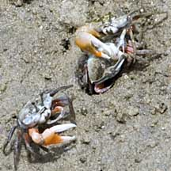 Tussel over a female? Chek Jawa, Mar 11 |
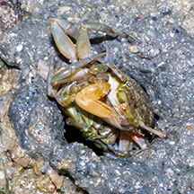 Mating? Kusu Island, May 07 |
 |
| Orange fiddler crabs on Singapore shores |
On wildsingapore
flickr
|
| Other sightings on Singapore shores |
| Filmed on Pulau
Ubin, May 08 Ubin - Fiddler crab run from SgBeachBum on Vimeo. |
Links
References
|